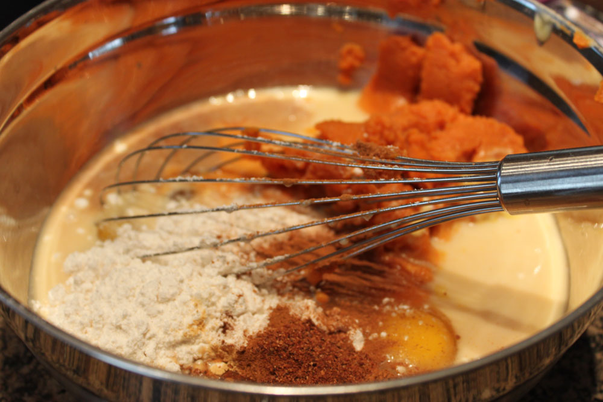
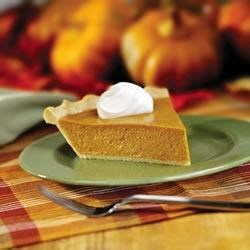

World's Greatest Healthy Food!
The Reason You Actually Ate a Healthy Dinner

Ingredients:
- 1(15 oz) can pumpkin
- 1(14 oz) can sweetened condensed milk
- 2 large eggs
- 1 teaspoon ground cinnamon
- 1/2 teaspoon ground ginger
- 1/2 teaspoon ground nutmeg
- 1/2 teaspoon salt
- 1(9 inch) unbaked pie crust

Prep time:15 minutes
Cook time:55 minutes
Directions:
- Preheat oven to 425 degrees F. Whisk pumpkin, sweetened condensed milk, eggs, spices and salt in medium bowl until smooth. Pour into Crust. Bake 15 minutes.
- Reduce oven temperature to 350 degrees F and continue baking 35 to 40 minutes or until knife inserted 1 inch from crust comes out clean. Garnish as desired. Store leftovers coverd in refrigerator.